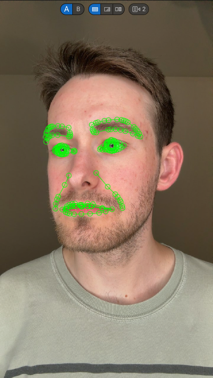
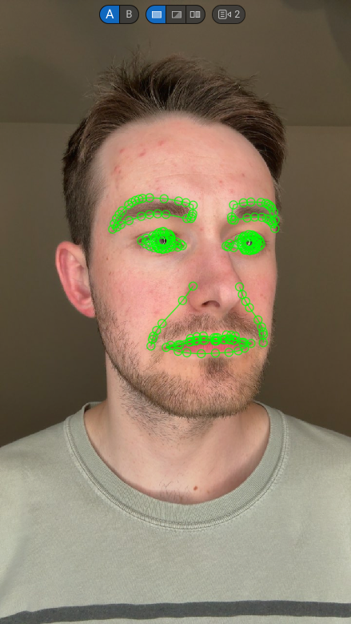
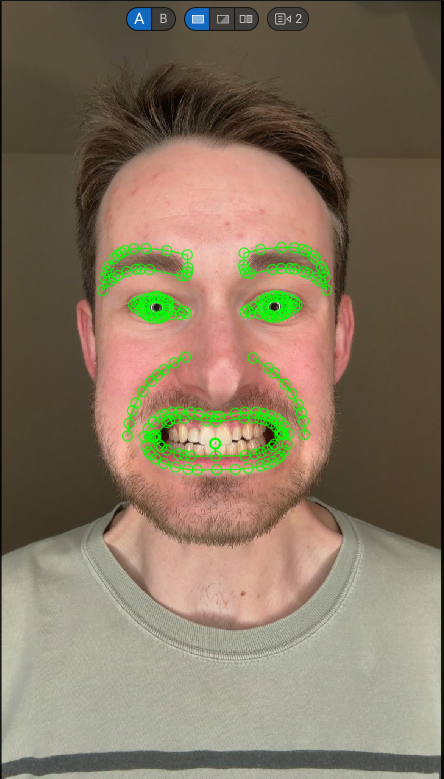

Download the Live Link Face app to your iPhone. iPhone 11 and later are supported.*
Open Live Link Face and select "Metahuman Animator" mode.
Calibrate the app to the performer
IMPORTANT: For each performer, capture one recording of them moving between the following poses (and holding each pose for a moment). These poses will be used later on to create a Metahuman ID (MHID):




Record your performances.
Transfer your performances to your computer. I do so, by uploading to Microsoft OneDrive, but any method that preserves the file quality should work.
Metahuman Animator does not yet officially support iPhone 15, so you will see a warning when you open the LiveLink app. However, this process will still work with iPhone 15. I have not been able to determine yet whether working with an iPhone 15 negatively impacts the quality of the final facial animations.
In Unreal, create a Capture Source:
Ingest your footage:
Set up a Metahuman Identity (MHID) for each performer using the pose performance captured above. An MHID helps Unreal properly map the performer's face to the Metahuman facial rig. To learn how to properly set up a MHID, I recommend watching this video from Unreal:
Right click in the Content Browser and select: [Metahuman Animator --> Metahuman Performance Asset]
Open the Metahuman Performance Asset.
Open the Metahuman Performance Asset and select the desired performance footage along with the MHID for the performer in that footage.
Set In/Out points on the timeline. If you want the option of exporting neck movement, be sure that this range contains at least one frame with the performer facing the camera directly.
Click "Process" in the upper left toolbar. Processing may take awhile as the engine will make multiple passes of the footage.
Once processing is complete, export the animation:
You can export the same animation sequence to different Metahuman face meshes in order to use the same animation on different Metahumans.